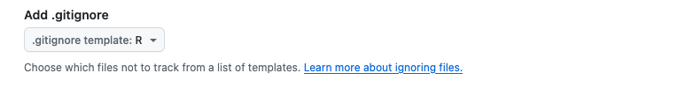

/Documentos/projeto-tcc/
├── script.R
├── tcc.qmd
├── tcc_corrigido.qmd
├── tcc_corrigido2.qmd
├── tcc_final.qmd
├── tcc_finalfinal.qmd
├── tcc_final_ultimo.qmd
├── juro_que_eh_a_ultima_versao.qmd
└── FINAL.qmd5 Introdução ao controle de versão com Git e GitHub
5.1 Introdução
Quando estamos trabalhando em um projeto, é comum que façamos várias alterações em nossos arquivos ao longo do tempo. Você já se deparou com uma situação em que você tinha várias versões de um arquivo, como este exemplo?
Provavelmente todos nós temos ou tivemos algo assim em algum momento, porque precisamos salvar nosso trabalho, mas ainda precisamos ter acesso a versões anteriores.
Existe uma forma mais robusta de trabalhar com as versões dos arquivos. Os sistemas de controle de versão são ferramentas que nos ajudam a gerenciar a evolução e as mudanças de um conjunto de arquivos que chamaremos de repositório.
Uma ferramenta similar ao controle de versão é o histórico de revisões do Google Docs, mas de uma forma muito mais controlada.
5.2 O que é Git?
Git é um sistema de controle de versão distribuído que permite a colaboração entre várias pessoas em um projeto ao mesmo tempo, sem sobrescrever o trabalho dos outros. Com o Git, cada alteração é salva em um histórico, o que permite voltar a versões anteriores se necessário. Além disso, facilita a colaboração e a integração de mudanças de diferentes colaboradores.
Para utilizar o Git, precisamos primeiramente instalar o software no nosso computador (indicado na página de instalações).

5.3 O que é GitHub?
GitHub é uma plataforma web que utiliza o Git para o controle de versões e a colaboração. Permite que as pessoasarmazenem seus repositórios Git na nuvem, facilitando o acesso e a colaboração de qualquer lugar. O GitHub também oferece ferramentas adicionais, como gerenciamento de projetos, e revisão de código.
Para começar a utilizar o GitHub, precisamos primeiramente criar uma conta gratuita no site (indicado na página de instalações e outros preparativos).

Aviso
Atenção! Git e GitHub são coisas diferentes. O Git é o sistema de controle de versão (um softare que instalamos no computador), enquanto o GitHub é uma plataforma web que utiliza o Git.
O GitHub não é a única plataforma que utiliza o Git. Outras plataformas populares são o GitLab e o Bitbucket. Entretanto, o GitHub é a plataforma mais popular e amplamente utilizada.
5.3.1 Exercícios
- Verifique se o Git está instalado no seu computador. Caso não esteja, instale o Git conforme indicado na página de instalações.
Você pode verificar se o Git está instalado no seu computador executando o seguinte comando no terminal:
git --version- 1
- Verificar a versão do Git instalada no computador.
git version 2.48.1- Faça login no GitHub. Caso não tenha uma conta, crie uma conta gratuita, conforme indicado na página de instalações e preparações.
5.4 Perfil no GitHub
Ao criar nossa conta no GitHub, teremos um perfil público na internet. A página do perfil conta a história do nosso trabalho através dos repositórios em que estamos interessados, das colaborações que realizamos e das conversas que tivemos.
Podemos acessar o nosso perfil clicando na nossa foto no canto superior direito da página inicial do GitHub. Podemos adicionar no nosso perfil informações sobre nós, como nossa localização, empresa, site pessoal, ORCID, pronome que preferimos utilizar, redes sociais, etc.
Podemos atualizar nosso perfil com informações sobre nós, como nossa localização, empresa, site pessoal, ORCID, pronome que preferimos utilizar, redes sociais, etc.
Para atualizar o perfil, podemos clicar no botão “Edit profile” na página do perfil, na barra lateral esquerda.
5.4.1 Exercício
Acesse o seu perfil no GitHub e atualize informações básicas sobre você. Sugestões: adicione pelo menos uma foto e o nome.
Compartilhe o link do seu perfil no GitHub no chat do curso.
5.5 Repositórios
Um repositório é um espaço onde armazenamos nossos arquivos e pastas. Criamos um repositório para cada projeto, e podemos adicionar arquivos de código, imagens, dados, documentação, etc.
A imagem a seguir apresenta a página inicial do repositório no GitHub do material do curso:
5.5.1 Criar um novo repositório
Podemos criar um repositório diretamente no GitHub, clicando no botão “New” no canto superior esquerdo da página inicial:
O GitHub direcionará para a página de criar novo repositório (Create a new repository). Nesta página, podemos fazer algumas configurações:
- Adicionar um nome para o repositório: lembrando que o nome do repositório deve ser “limpo”, ou seja, sem caracteres especiais, espaços, etc.
- Adicionar uma descrição: uma breve descrição do que o repositório contém. Isso pode ser alterado posteriormente, então não precisamos nos preocupar muito com isso inicialmente. A descrição é importante para que outras pessoas entendam o que o repositório contém, e consigam encontrá-lo mais facilmente nas buscas.
- Escolher se o repositório será público ou privado: Os repositórios podem ser públicos ou privados. Os repositórios públicos são visíveis para qualquer pessoa, enquanto os repositórios privados são visíveis apenas para as pessoas que têm permissão para acessá-los. Essa etapa é muito importante: não queremos expor informações sensíveis ou dados privados em repositórios públicos.
- Adicionar um arquivo README.md: O arquivo README.md é um arquivo de texto onde podemos adicionar informações sobre o repositório. Ele é exibido na página inicial do repositório no GitHub, e é uma forma de apresentar o repositório para outras pessoas. O README.md é escrito em Markdown. Recomendo selecionar essa opção sempre.
- Adicionar um arquivo .gitignore: O arquivo .gitignore é um arquivo de texto onde podemos listar os arquivos e pastas que não queremos que sejam versionados pelo Git. Por exemplo, arquivos temporários, arquivos de dados grandes, etc. Nesta opção, o GitHub está nos oferecendo uma lista de arquivos .gitignore pré-definidos para diferentes linguagens de programação, e podemos escolher a opção para a linguagem R.

- Adicionar um arquivo de licença: A licença é um documento que define as regras de uso do código. Existem várias licenças disponíveis, e a escolha da licença depende do que queremos permitir que outras pessoas façam com o nosso código. Caso não tenhamos certeza sobre a licença, podemos deixar essa opção em branco e adicionar a licença posteriormente.
Após preencher as informações, podemos clicar no botão “Create repository” para criar o repositório.
5.5.2 Exercícios
- Vamos criar um repositório no GitHub com o nome “
meu-primeiro-repositorio”. O repositório deve ser público, e escolha a opção para criar um arquivo README.md. Não é necessário adicionar um arquivo.gitignoreou uma licença.
5.6 Interagindo com o repositório através do site do GitHub
Podemos interagir com um repositório de várias formas: utilizando a linha de comando no nosso computador, utilizando alguma interface gráfica, ou através do site do GitHub. A forma mais simples de interagir com um repositório é através do site do GitHub, porém é importante saber que nem todas as funcionalidades estão disponíveis no site.
Ao clicar no botão Add file, podemos criar um novo arquivo (ou também outras pastas) (com a opção Create new file), e também podemos fazer o upload de um arquivo (com a opção Upload files).
Para criar um novo arquivo, precisamos adicionar o nome do arquivo (o caminho completo: o diretório - caso seja necessário, o nome do arquivo, e a extensão), e o conteúdo do arquivo.
Por exemplo, se queremos criar um arquivo chamado dados.R, e queremos que ele seja salvo na pasta scripts/, precisamos adicionar o caminho completo: scripts/dados.R (caso a pasta scripts/ ainda não exista, o GitHub irá criar).
Após escrever o conteúdo, podemos escrever uma mensagem de commit e clicar no botão Commit new file para adicionar o arquivo ao repositório.
Para fazer o upload de um arquivo, podemos arrastar o arquivo para a área demarcada (onde está escrito Drag files here to add them to your repository) ou clicar no botão Choose your files. Após selecionar os arquivos, podemos escrever uma mensagem de commit e clicar no botão Commit changes para enviar os arquivos para o repositório.
O que é uma mensagem de commit?
Uma mensagem de commit é uma mensagem que descreve as alterações que foram feitas em um commit. A mensagem de commit é importante para que outras pessoas entendam o que foi feito em um commit, e para que possamos entender o histórico de alterações do repositório.
Também podemos fazer alterações nos arquivos existentes no repositório. Para isso, precisamos abrir o arquivo que queremos editar, e clicar no botão do lápis (Edit this file). Faça as modificações necessárias, escreva uma mensagem de commit e clique no botão Commit changes para salvar as alterações.

Também podemos consultar as alterações feitas no repositório através da opção xx Commits (sendo x o número de commits realizados no repositório). Clicando nessa opção, podemos ver o histórico de alterações do repositório, e clicar em um dos commits para ver as alterações feitas naquele commit.
5.6.1 Exercícios
- No repositório criado anteriormente:
Edite o arquivo
README.mde adicione uma breve descrição sobre o repositório.Crie um arquivo chamado
script.R, dentro de uma pasta chamada dados, com o seguinte conteúdo:
write.csv(mtcars, "dados/mtcars.csv")Execute o código acima no seu RStudio e faça o upload do arquivo
mtcars.csvpara o repositório, dentro da pastadados/. Como esse arquivo aparece no repositório?Na página inicial do repositório, clique em
X Commitse veja o histórico de alterações do repositório. Clique em um dos commits para ver as alterações feitas naquele commit.
5.7 Conectar com o RStudio
Até agora, a nossa interação com o GitHub foi feita diretamente no site. Entretanto, podemos utilizar o Git e o GitHub diretamente no RStudio, o que facilita o trabalho com o controle de versão.
Para isso, precisamos conectar o RStudio com o GitHub.
5.7.1 Pacote {usethis}
O pacote {usethis} oferece diversas funções que facilitam o trabalho de configuração do Git e do GitHub no RStudio. Portanto, precisamos verificar se o pacote {usethis} está instalado no R. Caso não esteja, podemos instalar com o comando install.packages("usethis").
# install.packages("usethis")
library(usethis)O {usethis} tem uma função chamada git_sitrep() que nos ajuda a ter uma série de informações úteis para saber se o Git e GitHub estão conectados corretamente com o RStudio (situation report).
usethis::git_sitrep()5.7.2 Falar para o Git qual é o nosso nome e email
Antes de conectar o RStudio com o GitHub, precisamos nos apresentar ao Git. Para isso, precisamos configurar o Git com o nosso nome e e-mail (de preferência, utilize o mesmo email vinculado com a conta do GitHub). Podemos utilizar a função use_git_config() do pacote {usethis} para configurar o Git:
usethis::use_git_config(
user.name = "Seu Nome",
user.email = "seu_email@gmail.com"
)Para saber se o Git está configurado corretamente, podemos utilizar a função git_sitrep() do pacote {usethis}, e verificar no output se o nome e email estão configurados corretamente (em Git global).
usethis::git_sitrep()
# ── Git global (user)
# • Name: "...."
# • Email: "....."5.7.3 Criar um token de acesso pessoal (PAT)
O próximo passo é criar um token de acesso pessoal (Personal Access Token - PAT) no GitHub. O PAT é uma forma segura de acessar o GitHub sem precisar digitar a senha toda vez que fizermos uma operação.
Para criar um PAT, podemos utilizar a função create_github_token() do pacote {usethis}. Essa função irá abrir uma página no navegador para que possamos criar o PAT.
usethis::create_github_token()
# ☐ Call gitcreds::gitcreds_set() to register this token
# in the local Git credential store.
# ℹ It is also a great idea to store this token in any
# password-management software that you use.
# ✔ Opening URL
# <https://github.com/settings/tokens/new?scopes=repo,user,gist,workflow&description=DESCRIBE
# THE TOKEN'S USE CASE>.A página aberta no navegador é a página de criação de um novo token de acesso pessoal. Nessa página, precisamos adicionar um nome para o token, selecionar o tempo de expiração e as permissões que queremos dar para o token.
Sobre o nome do token: é importante adicionar um nome que descreva o uso do token. Como é possível utilizar o GitHub em diferentes computadores, eu costumo nomear o token com o nome do computador onde estou criando o token e a data de criação (por exemplo,
Macbook - Janeiro/2025).Sobre o tempo de expiração: podemos escolher entre um tempo de expiração de 30 dias, 90 dias, sem expiração ou personalizado. Eu costumo escolher a opção de 90 dias, para que eu não precise criar um novo token a cada mês. O GitHub não recomenda criar tokens sem expiração, por questões de segurança. Mas atenção: sempre que o seu token expirar, será necessário criar um novo token, e fazer o processo de atualizar o token no RStudio (que abordaremos a seguir).
Sobre os escopos selecionados: os escopos são as permissões que estamos dando para o token. O GitHub oferece uma série de escopos, e é importante selecionar apenas os escopos necessários para o uso do token. Recomendo manter apenas as opções pré-selecionadas pelo
{usethis}:repo,user,gisteworkflow.
Ao final da página, podemos clicar no botão Generate token para gerar o token. O GitHub irá gerar o token e exibir na tela. É importante copiar o token e salvar em um local seguro, pois não será possível acessar o token novamente.
5.7.4 Salvar o token de acesso pessoal no RStudio
Para salvar o token gerado, precisamos utilizar a função gitcreds::gitcreds_set() do pacote {usethis}. Essa função irá abrir uma janela no RStudio para que possamos colar o token gerado.
gitcreds::gitcreds_set()Siga as instruções que aparecem no Console do R, e informe o token gerado quando solicitado.
Atenção: após informar o token, reinicie a sessão do RStudio para que as alterações sejam aplicadas: no menu superior do RStudio, clique em Session -> Restart R.
5.7.5 Verificar se o RStudio está conectado ao GitHub
Para verificar se o RStudio está conectado ao GitHub, podemos utilizar novamente a função git_sitrep() do pacote {usethis}. No output, é importante que a opção Personal access token for ... esteja como <discovered>:
usethis::git_sitrep()
# ── GitHub user
# Personal access token for "https://github.com": <discovered>5.7.6 Exercícios
- Na explicação anterior, apresentamos como fazer a conexão do Git e do GitHub com RStudio. Execute os passos apresentados e verifique se o RStudio está conectado ao GitHub. Caso dê algum erro e precise de ajuda, solicite no chat com o resultado da função
git_sitrep().
5.8 Utilizando o Git e GitHub no RStudio
O RStudio possui uma interface gráfica para o Git, que facilita o trabalho com o controle de versão: o painel Git (ou Git Pane. Porém, este painel apenas aparece quando estamos em um projeto que está versionado com Git (ou seja, é um repositório do Git).
A seguir, vamos explorar como: 1) como fazer uma cópia de um repositório que está no GitHub para o RStudio, e 2) criar um novo repositório do Git a partir de um projeto existente no RStudio.
5.8.1 Fazer uma cópia de um repositório no GitHub para o computador (clone) com o RStudio
Para fazer uma cópia de um repositório que existe no GitHub para o computador, precisamos “clonar” o repositório.
Primeiramente, precisamos copiar a URL do repositório que queremos clonar. A URL do repositório é composto por https://github.com/SEU-NOME-DE-USUARIO/NOME-DO-REPOSITORIO.
Por exemplo, a URL do repositório do material curso é https://github.com/ipeadata-lab/curso_r_intermediario_202501, pois o nome de usuário (no caso, a organização) é ipeadata-lab e o nome do repositório é curso_r_intermediario_202501.
Com a URL do repositório copiada, no RStudo precisamos selecionar a opção “New Project” no menu superior, e depois selecionar a opção “Version Control” e “Git”:
Na próxima tela, precisamos colar a URL do repositório que queremos clonar no campo Repository URL, e escolher o diretório onde queremos salvar o repositório no campo Create project as subdirectory of. O campo Project directory name é preenchido automaticamente com o nome do repositório. Após preencher as informações, clicamos no botão “Create Project”:
O RStudio irá fazer o clone do repositório, e abrirá um projeto para ele (caso não exista um ainda, será criado).
5.8.2 Exercícios
Faça os passos descritos anteriormente com o repositório “
meu-primeiro-repositorio” (criado anteriormente), para fazer o clone do GitHub para o RStudio.Verifique se o painel
Gitaparece no RStudio.
5.8.3 Fluxo de trabalho com Git e GitHub no RStudio
Como citado anteriormente, o RStudio possui uma interface gráfica para o Git (o painel Git), que facilita o trabalho com o controle de versão.
Primeiro, vamos revisar alguns conceitos. Quando criamos um projeto no RStudio, o RStudio cria uma pasta para o projeto, (diretório). Na imagem abaixo, essa etapa é representada pela pasta amarela.
Quando iniciamos a versionar o projeto com o Git (um passo chamado git init), chamamos de “Repositório” a pasta do projeto que está sendo versionada. O repositório local é a pasta do projeto no computador, e o repositório remoto é a cópia do repositório que está no GitHub:
As alterações entre o repositório local e o repositório remoto não são enviadas automaticamente, então é importante entender o fluxo de trabalho com o Git e GitHub. O fluxo de trabalho básico é:
Iniciamos o repositório (
git init) ou clonamos um repositório existente (git clone).Fazemos alterações nos arquivos do repositório.
Selecionamos as alterações que queremos adicionar em um commit (adicionamos as alterações ao stage -
git add).Confirmamos as alterações (
git commit).Enviamos as alterações para o repositório remoto (
git push).Atualizamos o repositório local com as alterações do repositório remoto (
git pull).
Nas imagens abaixo, é possível ver como o painel Git do RStudio facilita o trabalho com o controle de versão, pois apresenta botões para os comandos descritos acima:


5.8.4 Exercícios
- No repositório “
meu-primeiro-repositorio” (clonado anteriormente no RStudio), faça as seguintes alterações:
Faça uma alteração no arquivo
README.md(ex. adicione uma nova linha com a data de hoje).Observe o painel Git: a alteração feita no arquivo
README.mdaparece no painel Git? Se sim, adicione a alteração ao stage e faça um commit.Veja o seu repositório no GitHub: a alteração feita no arquivo
README.mdaparece no repositório? O esperado é que não, pois ainda não enviamos as alterações para o repositório remoto.Clique no botão push para enviar as alterações para o repositório remoto.
Observe novamente o seu repositório no GitHub: as alterações feitas no RStudio aparecem no repositório?
- Na interface do GitHub, abra o repositório “
meu-primeiro-repositorio” e:
faça outra alteração no arquivo
README.md.Após fazer a alteração, volte para o RStudio e veja se a alteração feita no GitHub aparece no RStudio. O esperado é que não, pois ainda não atualizamos o repositório local com as alterações do repositório remoto.
No RStudio, clique no botão pull para atualizar o repositório local com as alterações do repositório remoto.
Observe novamente o arquivo
README.mdno RStudio: a alteração feita no GitHub aparece no RStudio?
5.8.5 Criar um novo repositório no GitHub a partir do R
Podemos criar um novo repositório no GitHub a partir de um projeto existente no RStudio.
Para isso, precisamos seguir os seguintes passos:
- Inicializar o repositório local com o Git (caso ainda não tenha sido feito). Para isso, podemos utilizar a função
use_git()do pacote{usethis}. Atenção: essa função apresenta algumas mensagens e opções no console, então é importante ler as mensagens e responder conforme necessário.
usethis::use_git()O RStudio solicitará que você o reinicie para que o painel Git apareça.
- Utilize a função
usethis::use_github()para criar um novo repositório no GitHub a partir do projeto no RStudio. Essa função irá abrir uma janela no navegador quando o repositório for criado. Atenção: essa função apresenta algumas mensagens e opções no console, então é importante ler as mensagens e responder conforme necessário.
usethis::use_github()5.8.6 Exercícios
- Abra o projeto que estamos utilizando ao longo do curso (criado na aula 1), e:
- Inicialize o repositório local com o Git:
usethis::use_git(). - Crie um novo repositório no GitHub a partir do projeto no RStudio:
usethis::use_github(). - Crie um arquivo
README.mdna pasta raíz do projeto, e adicione um breve conteúdo. Faça o commit desta alteração, e faça o push. Verifique se o arquivoREADME.mdaparece no repositório no GitHub.
5.9 Glossário
Git
“O Git é um programa de código aberto para acompanhamento de alterações em arquivos de texto. Ele foi escrito pelo autor do sistema operacional Linux e é a principal tecnologia na qual o GitHub, a interface social e do usuário, se baseia.”
Fonte: Glossário do GitHub
GitHub
“Uma plataforma baseada em nuvem construída em torno do Git que permite salvar versões do seu projeto online e colaborar com outras pessoas usuárias do Git.”
Fonte: Glossário da Carpentries
Repositório
“Um repositório é o elemento mais básico do GitHub. É mais fácil imaginá-lo como uma pasta de projetos. Um repositório contém todos os arquivos de projeto (incluindo a documentação) e armazena o histórico de revisão de cada arquivo. Os repositórios podem ter vários colaboradores e podem ser públicos ou privados.”
Fonte: Glossário do GitHub
Arquivo
README
“Um arquivo de texto que contém informações sobre os arquivos de um repositório que, normalmente, é o primeiro arquivo que um visitante do repositório verá. Um arquivo README, acompanhado de uma licença de repositório, diretrizes de contribuição e um código de conduta, ajuda você a compartilhar as expectativas e gerenciar as contribuições do seu projeto.”
Fonte: Glossário do GitHub
Commit
“Commit, ou”revisão”, é uma alteração individual em um arquivo (ou conjunto de arquivos). Quando você faz um commit para salvar seu trabalho, o Git cria uma ID exclusiva (também conhecida como o “SHA” ou “hash”) que permite que você mantenha o registro das alterações específicas confirmadas com quem as fez e quando. Os commits normalmente contêm uma mensagem do commit, que é uma breve descrição de quais alterações foram feitas.”
Fonte: Glossário do GitHub
Mensagem de Commit
“Texto breve e descritivo que acompanha um commit e comunica a alteração que o commit apresenta.”
Fonte: Glossário do GitHub
Pull
“Pull refere-se a quando você busca alterações e as mescla. Por exemplo, se alguém editou o arquivo remoto no qual vocês dois estão trabalhando, o ideal é fazer pull dessas alterações na cópia local para que ele fique atualizado. Confira também fetch.”
Fonte: Glossário do GitHub
Push
“Enviar por push significa enviar as alterações confirmadas para um repositório remoto no GitHub.com. Por exemplo, se você alterar algo localmente, poderá enviar por push essas alterações para que outras pessoas possam acessá-las.”
Fonte: Glossário do GitHub
5.10 Materiais
O material do workshop “Introducción a GitHub para Investigador(a|e)s”, ministrado por Beatriz Milz e Yanina Belllini Saibene, foi utilizado como base para a elaboração de parte do material desta aula.